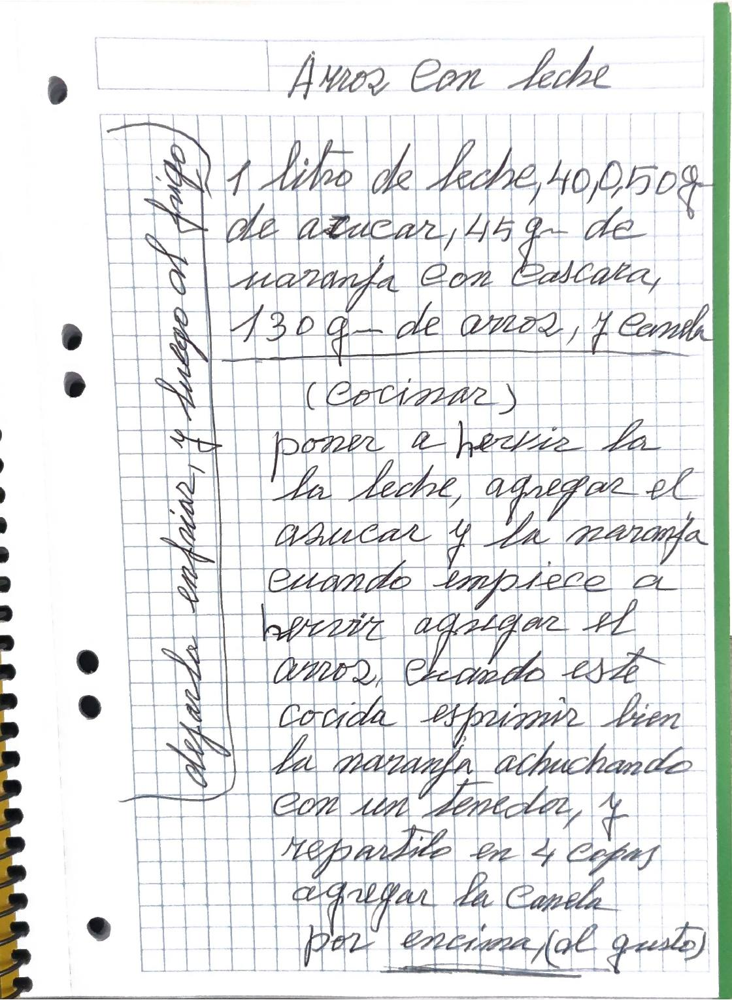

Cuaderno, pág. 20
Arroz con leche

En 4 copas
Versión editada para cocinar. Lo que ella escribió, palabra por palabra, está en «Cuaderno».
Ingredientes
Preparación
- Poner a hervir la leche. Agregar el azúcar y la naranja.
- Cuando empiece a hervir, agregar el arroz.
- Cuando esté cocido, exprimir bien la naranja achuchando con un tenedor.
- Repartirlo en 4 copas.
- Dejarlo enfriar y luego al frigo.
- Agregar la canela por encima, al gusto.
Avisos y dudas
- No dice cuánto tiempo cuece el arroz.
- La nota del margen no dice si se enfría antes o después de poner la canela; la he puesto antes.
Tal como lo escribió

Transcripción fiel, con su ortografía. Lo que va entre corchetes son aclaraciones de la transcripción.
Arroz con leche
1 litro de leche, 40, o 50 g. de azucar, 45 gr. de naranja con cascara, 130 gr. de arroz, y canela
(Cocinar)
poner a hervir la la leche, agregar el azucar y la naranja cuando empiece a hervir agregar el arroz, cuando este cocida esprimir bien la naranja achuchando con un tenedor, y repartirlo en 4 copas agregar la canela por encima, (al gusto)
Nota al margen (vertical, pág. 20):
(dejarlo enfriar, y luego al frigo)
En la cocina